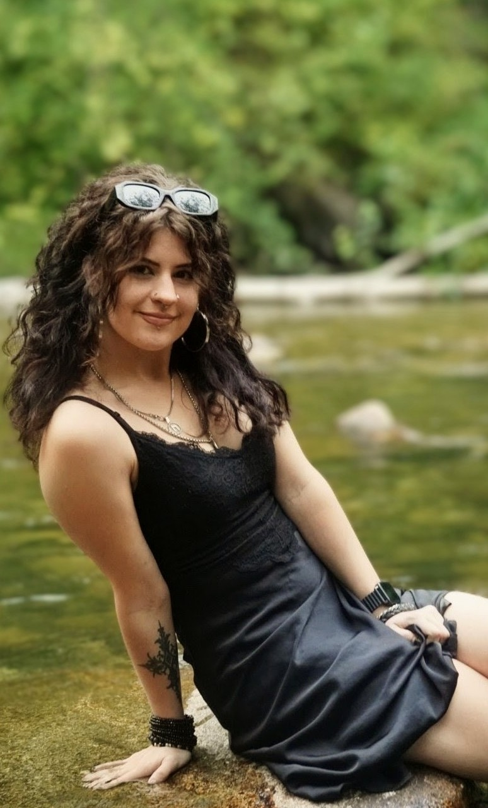

A little about the person
Behind the lens.

“There is no exquisite beauty… without some strangeness.”
— EDGAR ALLAN POEMy love for photography began with film. There was something mysterious about taking a photograph without knowing exactly how it had turned out, simply trusting your eye, your instincts, and your understanding of the craft. Each frame felt deliberate, and the wait to see the result was part of the magic. I fell in love with the process of creating something meaningful without being able to see the outcome straight away.
Perhaps that love began even earlier, though, when I discovered my great-grandfather’s travel slides as a child. I remember turning on the projector and clicking through photographs from his travels through Egypt, France, and places around the world as they appeared in the 1960s. These were moments from a time I had never known, preserved by someone who had stood there decades before me. There was something extraordinary about being able to see through his eyes, if only for a moment.
Today, I still use my great-grandfather’s camera to shoot film photography. I also have a growing collection of vintage cameras, each carrying a little of the history and character that draws me to photography in the first place. There is something special about continuing to use a camera that has already witnessed so much, adding new memories to an object that has its own story to tell.
That feeling is at the heart of my work: the idea that a photograph can be more than a picture. It can be a small piece of time, kept safe for someone else to discover years, or even decades, later.
I’m drawn to photographs that feel as though they belong in a film: cinematic light, quiet details, genuine emotion, and the little moments that tell a bigger story. I love documentaries for much the same reason. Real people expressing joy, struggle, and whole worlds of feeling that often go unspoken, yet remain familiar to us all. I want my work to capture some of that honesty; photographs that feel lived-in, a little nostalgic, and full of life.
My approach is influenced by old films, vintage jazz, and the charm of another era. I’ve always had a fondness for things that stand the test of time. For my ninth birthday, I asked for the fifth season of I Love Lucy on DVD so I could complete my collection. To this day, Dick Van Dyke remains my favourite sitcom. I suppose I’ve always been a little old-fashioned.
With Dezilou Photography, I hope to create photographs that feel less like something posed for the sake of a picture and more like a scene worth remembering. Whether it’s a milestone, a fleeting glance, or an ordinary afternoon, I want to preserve the feeling of being there, so that years from now, you can return to that moment and find a little piece of it waiting for you.
— Desirée